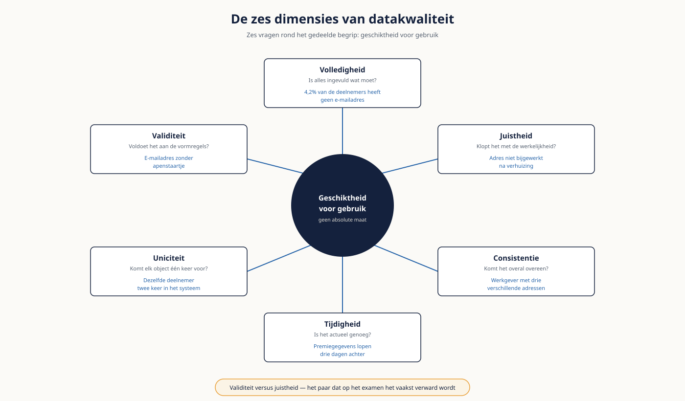

Deel 4 — Datakwaliteit — grondbeginselen
Niveau 1 — Fundament · Reader
Voorbereiding, geen vervanging
Deze cursusmap is onafhankelijk ontwikkeld door Ductus B.V. Ductus is niet gelieerd aan, geaccrediteerd door of goedgekeurd door DAMA International, IIBA, IAPP, de EDM Association of Microsoft.
Dit materiaal bereidt voor op de genoemde examens en vervangt het officiële examenmateriaal niet. Bodies of knowledge, handboeken en examenblueprints worden hier niet gereproduceerd; deelnemers schaffen die bronnen zelf aan.
Alle genoemde merken zijn eigendom van hun respectieve houders. Examengegevens gecontroleerd in augustus 2026 — verifieer vóór inschrijving bij de bron.
1. Waar dit deel over gaat
"De datakwaliteit is slecht" is de meest gehoorde en minst bruikbare zin in dit vakgebied. Hij is niet toetsbaar, niet te weerleggen en leidt tot niets. Dit deel leert je die zin te vervangen door een uitspraak waar wél iets mee kan: welk gegeven, op welke dimensie, gemeten hoe, met welk gevolg, en van wie is het.
Dat is geen woordenspel. Het verschil tussen "de deelnemersgegevens deugen niet" en "van de 380.000 deelnemers heeft 4,2 procent geen valide e-mailadres, waarvan 11.000 hetzelfde adres delen, wat de digitale uitvraag voor de DNB-rapportage blokkeert" is het verschil tussen een klacht en een opdracht.
Leerdoelen
- Je onderbouwt een kwaliteitsbevinding met een dimensie, een meting en een gevolg.
- Je benoemt de zes kwaliteitsdimensies en past ze toe op een concrete bevinding.
- Je bakent kritieke data-elementen af en legt uit waarom alles meten faalt.
- Je leest een profileringsrapport en haalt daar de afwijkingen uit die ertoe doen.
- Je schrijft een kwaliteitsregel met object, conditie, drempel, ernst en eigenaar.
- Je onderscheidt de vijf oorzaakcategorieën en herkent waar in de keten een probleem ontstaat.
- Je maakt de kosten van slechte data zichtbaar zonder te overdrijven.
2. Kwaliteit is een oordeel, geen eigenschap
In deel 1 kwam het al langs: datakwaliteit is geschiktheid voor gebruik. Dat betekent dat dezelfde dataset tegelijk voldoende en onvoldoende kan zijn. Het deelnemersbestand van Meridiaan is prima voor een nieuwsbrief en onbruikbaar voor een toezichtsrapportage — zonder dat er ook maar één veld verandert.
Daaruit volgt een praktische consequentie die veel discussies bekort: je kunt geen kwaliteitsoordeel geven zonder te weten waarvoor de data gebruikt wordt. Wie om "een kwaliteitsmeting op het deelnemersbestand" wordt gevraagd, moet eerst vragen: voor welk gebruik?
De zin die je vervangt
Niet: "de datakwaliteit is slecht." Wel: "gegeven X voldoet op dimensie Y niet aan norm Z, gemeten met regel R, waardoor proces P vastloopt, en eigenaar is O." Vijf elementen. Ontbreekt er één, dan is het nog geen bevinding.
3. De zes dimensies
Bronnen hanteren verschillende lijsten — sommige noemen er vier, andere vijftien. Deze zes komen overal terug en dekken in de praktijk vrijwel alles. Belangrijker dan de lijst is dat je per bevinding één dimensie kiest; een bevinding die op drie dimensies tegelijk zit, is meestal nog niet scherp genoeg geformuleerd.
| Dimensie | Vraag | Voorbeeld bij Meridiaan | Hoe je het meet |
|---|---|---|---|
| Volledigheid | Is alles ingevuld wat ingevuld moet zijn? | 4,2% van de deelnemers heeft geen e-mailadres | Percentage gevulde waarden op verplichte velden |
| Juistheid | Klopt de waarde met de werkelijkheid? | Een adres dat na verhuizing niet is bijgewerkt | Vergelijking met een betrouwbare externe bron |
| Consistentie | Komt hetzelfde gegeven overal overeen? | Werkgever met drie verschillende adressen | Vergelijking tussen systemen of tabellen |
| Tijdigheid | Is het gegeven actueel genoeg voor het gebruik? | Premiegegevens die drie dagen achterlopen | Leeftijd van het gegeven versus de eis |
| Uniciteit | Komt elk object precies één keer voor? | Dezelfde deelnemer twee keer in het systeem | Aantal dubbelen op de sleutel of op een combinatie |
| Validiteit | Voldoet de waarde aan de vormregels? | E-mailadres zonder apenstaartje; ongeldige postcode | Toetsing aan formaat, bereik of codelijst |
Let op het verschil tussen validiteit en juistheid: dat is het paar dat op het examen het vaakst verward wordt. Een e-mailadres kan volledig valide zijn — juiste vorm, geldig domein — en toch niet van deze deelnemer zijn. Validiteit toets je machinaal, juistheid alleen tegen de werkelijkheid.

4. Waar slechte data ontstaat
Vijf oorzaakcategorieën. Ze vragen om verschillende maatregelen, en dat is precies waarom je de oorzaak moet kennen voordat je iets oplost.
| Categorie | Wat er gebeurt | Voorbeeld | Passende maatregel |
|---|---|---|---|
| Invoer en proces | De medewerker vult iets anders in dan bedoeld | Standaard-e-mailadres bij een onbekend adres | Validatie bij invoer, terugkoppeling, procesaanpassing |
| Ontwerp | Het model of scherm dwingt tot onzin | Verplicht veld waar de werkelijkheid uitzonderingen kent | Model of scherm aanpassen; uitzondering mogelijk maken |
| Integratie | Onderweg gaat betekenis of volume verloren | Records die op een onbekende code stuklopen | Foutafhandeling, monitoring, herkomst vastleggen |
| Definitie | Iedereen vult iets anders in bij hetzelfde veld | Vier definities van "actieve deelnemer" | Definitie vaststellen — en beleggen wie dat mag |
| Veroudering | De waarde was goed en is het niet meer | Adres na verhuizing, werkgever na fusie | Verversing, externe bronkoppeling, houdbaarheidsregel |
De verdeling verrast vaak: in de praktijk is de eerste categorie het zichtbaarst en de vierde het duurst. Definitieproblemen genereren geen foutmeldingen — ze produceren keurige rapportages die niet met elkaar overeenkomen. Ze worden pas ontdekt wanneer iemand twee getallen naast elkaar legt.
Waarom oorzaak vóór oplossing gaat
Meridiaan kan het standaard-e-mailadres uit het platform schoonvegen. Volgende maand staat het er weer, want de oorzaak zit in het scherm en in het proces. Schoonmaken zonder de oorzaak aan te pakken is geen oplossing maar een terugkerende kostenpost.
5. Kritieke data-elementen
Alles meten is hetzelfde als niets meten: je krijgt een rapport met duizend regels dat niemand leest. Kritieke data-elementen zijn de beperkte set gegevens waarvan fouten materiële gevolgen hebben. De waarde van het begrip zit volledig in de beperking.
Vier vragen om af te bakenen
- Welk gegeven staat in een verplichte externe rapportage of in een contract?
- Welk gegeven leidt bij een fout tot financiële schade of tot schade bij een deelnemer?
- Welk gegeven wordt door meerdere afdelingen gebruikt, zodat een fout zich verspreidt?
- Welk gegeven is nodig om een deelnemer te bereiken of te identificeren?
Bij Meridiaan levert dat een lijst van hooguit vijftien tot vijfentwintig elementen op — geboortedatum, burgerservicenummer, dienstverbandperiode, deelnemerstatus, opbouwpercentage, e-mailadres, IBAN — en niet de vierhonderd termen uit de spreadsheet. Begin daar, meet dat goed, en breid pas uit als het werkt.
6. Data profiling
Profiling is het systematisch doorlichten van een dataset zonder vooraf te weten wat je zoekt. Het is het onderzoek dat aan elke kwaliteitsuitspraak voorafgaat, en het is verrassend vaak het enige wat nodig is om een discussie te beslechten.
| Soort profiel | Wat je bekijkt | Wat het oplevert |
|---|---|---|
| Kolomprofiel | Vulgraad, aantal unieke waarden, minimum en maximum, lengte, patronen, frequentieverdeling | Lege velden, dummywaarden, uitschieters, verdachte pieken |
| Relatieprofiel | Verwijzingen tussen tabellen, weeskinderen, kardinaliteit in de praktijk | Verwijzingen die nergens heen gaan; relaties die anders liggen dan het model zegt |
| Regelprofiel | Toetsing aan bekende regels en verwachtingen | Overtredingen, en vaak: regels die nergens waren vastgelegd |
Wat een profileringsrapport verraadt
- Een piek in de frequentieverdeling: één waarde die veel vaker voorkomt dan verklaarbaar. Dat is bijna altijd een dummywaarde — het standaard-e-mailadres, 01-01-1900 als geboortedatum, of de postcode van het hoofdkantoor.
- Een vulgraad van precies 100 procent op een veld dat logisch niet altijd van toepassing kan zijn. Dat betekent dat iemand iets invult om verder te kunnen.
- Een minimum of maximum dat niet kan: een geboortedatum in de toekomst, een negatief opbouwpercentage.
- Een aantal unieke waarden dat sterk afwijkt van het aantal records — te weinig duidt op dummywaarden, te veel op ontbrekende standaardisatie.
- Weeskinderen: verwijzingen naar een werkgever die niet meer bestaat.
De eerste twintig minuten
Bij een nieuwe opdracht levert twintig minuten profiling meer op dan twee dagen interviews. Vraag om een kopie van de data, kijk naar vulgraad en frequentieverdeling van de tien belangrijkste velden, en je hebt gesprekstof waar niemand omheen kan.
7. Kwaliteitsregels schrijven
Een bevinding wordt pas beheersbaar als hij een regel wordt die herhaaldelijk kan draaien. Een goede regel bevat vijf elementen.
| Element | Betekent | Voorbeeld |
|---|---|---|
| Object | Waarop de regel van toepassing is | Het veld e-mailadres in de entiteit Deelnemer |
| Conditie | Wat er waar moet zijn | Bevat een geldig formaat en komt niet vaker dan tweemaal voor |
| Drempel | Vanaf wanneer het een probleem is | Minimaal 97% van de actieve deelnemers voldoet |
| Ernst | Wat de consequentie van een overtreding is | Hoog: blokkeert de digitale uitvraag |
| Eigenaar | Wie de overtreding oplost | Data owner van het domein Deelnemer |
Een regel zonder drempel is een wens: honderd procent haalt niemand, dus zonder norm is elke meting een falen. Een regel zonder eigenaar is een rapportage: de overtreding wordt netjes geteld en nooit opgelost. Die twee ontbreken in de praktijk het vaakst.
Let ook op de formulering: schrijf op wat waar moet zijn, niet wat fout is. "Elk actief deelnemerrecord heeft een uniek, valide e-mailadres" is toetsbaar. "Er mogen geen foute e-mailadressen in staan" niet.
8. De kosten zichtbaar maken
Zonder kostenbeeld krijgt datakwaliteit geen budget. Met een overdreven kostenbeeld verlies je geloofwaardigheid bij de eerste kritische vraag. De middenweg is een berekening die je kunt verdedigen, hoe klein ook.
| Kostensoort | Wat het is | Voorbeeld bij Meridiaan |
|---|---|---|
| Directe kosten | Herstelwerk dat je kunt tellen | Uren van de klantcontactafdeling voor teruggekomen post |
| Indirecte kosten | Vertraging, dubbel werk, extra controles | Handmatige afstemming vóór elke kwartaalrapportage |
| Risicokosten | Kans maal impact van iets wat nog niet gebeurd is | Een toezichtsmaatregel na de DNB-bevinding |
| Gemiste waarde | Wat niet kan doordat de data niet deugt | Digitale uitvraag die niet van start kan |
Een bruikbaar principe uit het vakgebied is de tienvoudsregel: een fout voorkomen bij invoer kost ongeveer een euro, herstellen verderop in de keten ongeveer tien, en de gevolgen dragen ongeveer honderd. De exacte verhouding is niet het punt — de orde van grootte is het argument, en die verklaart waarom maatregelen bij de bron vrijwel altijd renderen.
Reken klein en verdedigbaar
Eén regel met echte uren, tegen een tarief dat de opdrachtgever zelf hanteert, overtuigt meer dan een schatting van tonnen. Als de klantcontactafdeling wekelijks zes uur besteedt aan teruggekomen post, is dat ruim driehonderd uur per jaar — een getal dat niemand betwist en dat het gesprek opent.
9. Meten en rapporteren
- Meet per regel en rapporteer per kritiek data-element. Eén samengesteld kwaliteitscijfer voor de hele organisatie klinkt bestuurlijk aantrekkelijk en is stuurloos: je weet niet wat er beter moet als het daalt.
- Rapporteer de trend, niet alleen de stand. Een score van 94% zegt weinig; 94% na drie maanden op 88% zegt alles.
- Zet naast elke score de drempel. Een score zonder norm nodigt uit tot een discussie over of het erg is.
- Rapporteer ook wat je niet meet. Anders leest de lezer het gemeten deel als het geheel.
10. Vijf valkuilen
- Schoonmaken zonder de oorzaak aan te pakken. Volgende maand staat het er weer.
- Alles meten. Het rapport wordt onleesbaar en niemand voelt zich aangesproken.
- Streven naar honderd procent. Dat is niet haalbaar en het maakt elke meting een falen.
- Kwaliteit beoordelen zonder te weten waarvoor de data gebruikt wordt.
- De kosten opblazen om budget te krijgen. Eén weerlegde aanname kost je het hele voorstel.
11. Examenrelevantie
Data Quality is een van de zwaarst wegende kennisgebieden op het CDMP Fundamentals-examen. Dit deel legt de basis; deel 15 verdiept naar het kwaliteitsproces en het specialistexamen. De terminologie volgt de DAMA-DMBOK2 Revised Edition en is op het examen leidend.
Aandachtspunten
- De dimensies bij naam, en het onderscheid tussen validiteit en juistheid — dat wordt via scenario’s getoetst.
- Datakwaliteit als geschiktheid voor gebruik, niet als absolute maat.
- Het begrip kritiek data-element en waarom afbakening noodzakelijk is.
- Profiling als onderzoeksmethode, en wat de drie profielsoorten opleveren.
- Engels: completeness, accuracy, consistency, timeliness, uniqueness, validity, data profiling, critical data element, remediation, root cause.
Studiemateriaal bij dit deel
Kernbron: het hoofdstuk over data quality in de DAMA-DMBOK2 Revised Edition. Schaf deze zelf aan — tijdens het examen is dit het enige toegestane hulpmiddel, in papier óf digitaal.
Verdieping richting deel 15: Executing Data Quality Projects van Danette McGilvray, breed aanbevolen naast het DMBOK-hoofdstuk.
Examenopzet en wegingen: cdmp.info/exams en dama.org/certification.
Dit materiaal reproduceert geen van deze bronnen en vervangt ze niet.